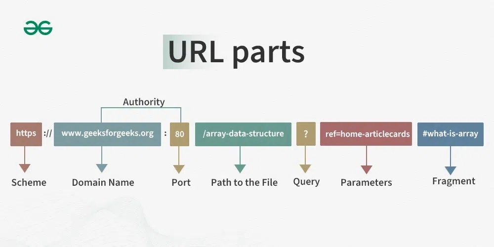

A URL (Uniform Resource Locator, also called a web address) is a unique identifier used to locate a resource on the internet. End users use URLs by typing them directly into a browser address bar or by clicking a hyperlink found on a webpage, bookmark list, email or another application.
Parts of a URL
- The protocol or scheme: This is used to access a resource on the internet. Protocols include http, https, ftps, mailto and file.
- Host name or domain name: This is the unique reference that represents a webpage.
- Subdomain: This precedes the main domain name. In this case, "www" denotes the Word Wide Web.
- Port name: These usually aren't visible in URLs. In a URL, ports always follow a colon.
- Path: A path refers to a file or location on the web server.
- Query (Parameters): Optional data passed to the server, starting with a ?
- Fragment(Anchor): A # symbol followed by an identifier that directs the browser to a specific section on a page.
